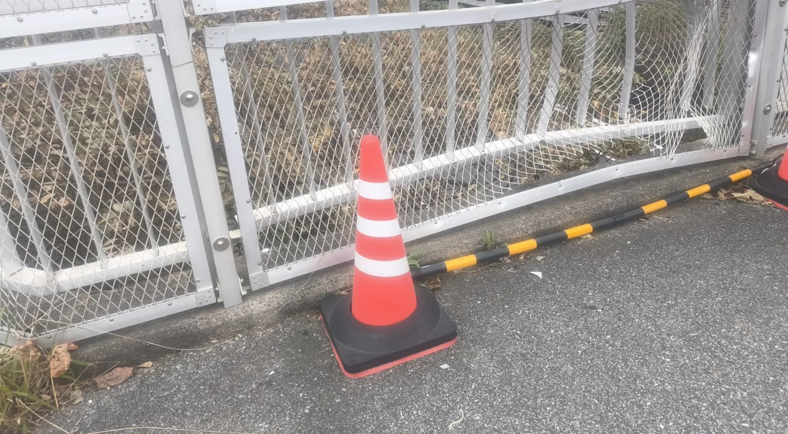
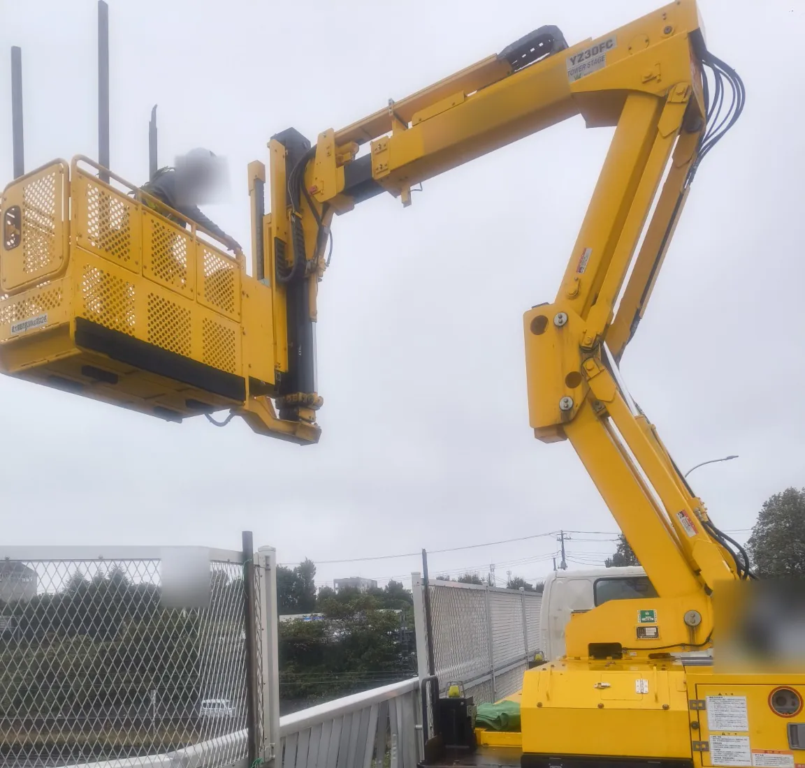
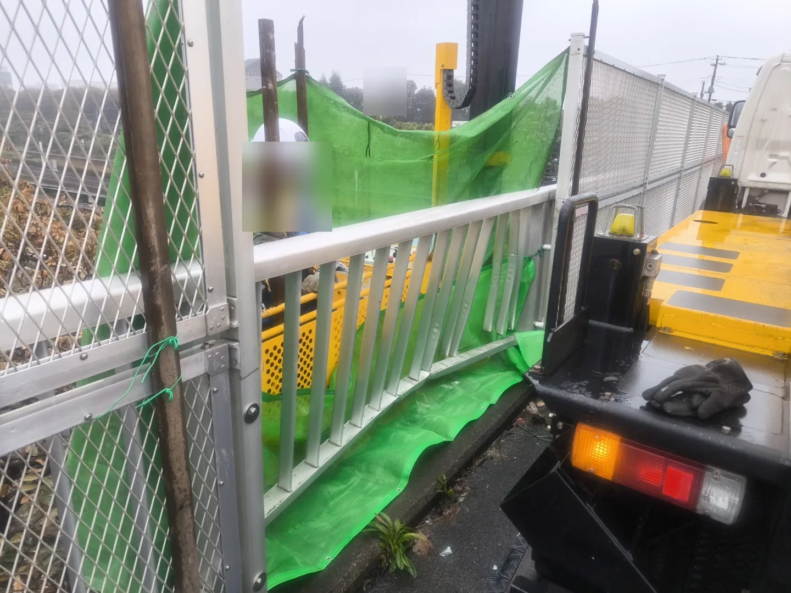
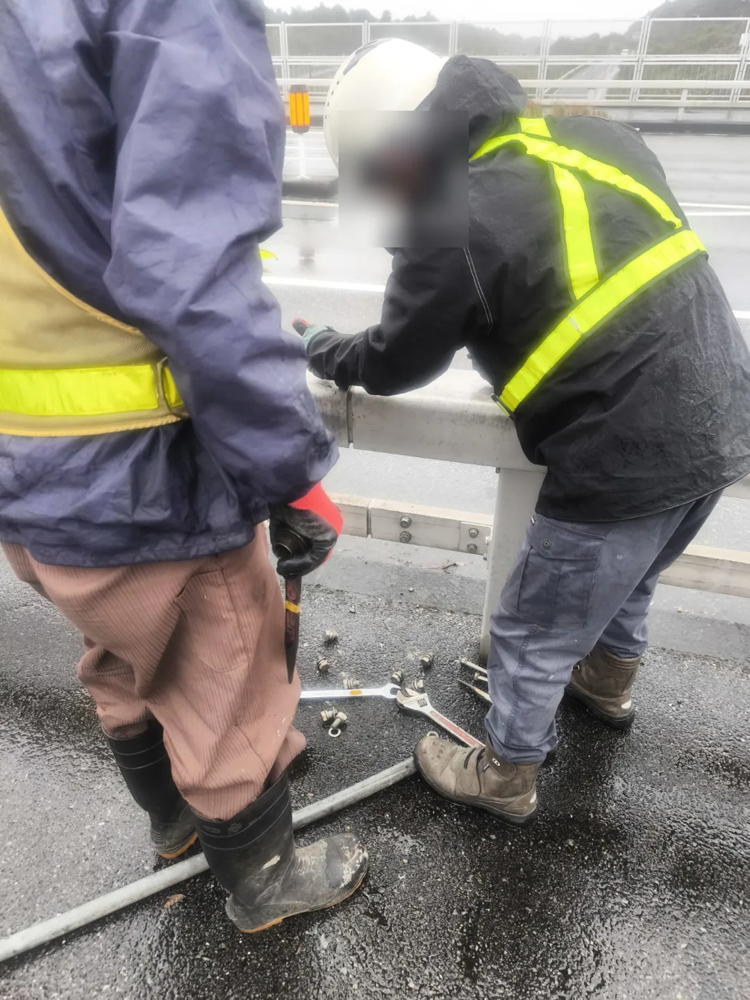

01 / SITE CONDITIONS
図面だけでは決められない、現場の条件
歩道幅は3.5m以上あり、道路側からオーバーフェンスを使用する方法では作業箇所まで届かない条件でした。さらに、高架下には主要道路があり、既存フェンスを撤去する際の部材落下に備える必要がありました。
メーカーから支給された図面と施工依頼をもとに、現地の寸法や作業空間、周辺の交通を確認し、施工方法と使用する機械を検討しました。
WORKS / ROADSIDE FENCE RESTORATION
現地調査から特殊車両の選定、落下物対策、現場加工まで
千葉県白井市の国道沿いで、事故により損傷した特殊形状フェンスの撤去・復旧工事を行いました。広い歩道、高架下の交通、図面と現況の相違、固着した接合部など、現場特有の課題に対し、太刀川組が現地調査から施工方法・使用機械の検討、現場加工、復旧施工まで対応しました。

写真はプライバシー保護のため一部を加工しています。
01 / SITE CONDITIONS
歩道幅は3.5m以上あり、道路側からオーバーフェンスを使用する方法では作業箇所まで届かない条件でした。さらに、高架下には主要道路があり、既存フェンスを撤去する際の部材落下に備える必要がありました。
メーカーから支給された図面と施工依頼をもとに、現地の寸法や作業空間、周辺の交通を確認し、施工方法と使用する機械を検討しました。
02 / PLANNING
歩道をプラスチック敷板で養生し、幅の狭い遮音壁点検車を使用しました。機械と作業箇所の配置を検討し、歩行者通路1.5mを確保して施工しました。

03 / PROTECTION
既存部材の撤去時に、部材が高架下へ落下することを懸念しました。フェンス外側にバケットを配置し、作業部をメッシュシートで覆って落下物対策を実施しました。

04 / ON-SITE WORK
図面と既存フェンスの現況には相違があり、既存部材の切断・加工を現地で行いました。また、アルミ部材とステンレスボルトが固着していたため、切断、再穿孔、タップ加工を実施しました。
固着は異種金属接触に伴う腐食の影響も疑われますが、原因を断定するものではありません。

05 / COMPLETION

現地調査と施工計画を踏まえ、必要な現場加工と復旧施工を行い、予定工期内に完了しました。
太刀川組は、特殊フェンスメーカーからの下請施工として本工事を担当しました。フェンスの設計・製造は当社の担当ではありません。事故復旧案件では、約10年間にわたって同種の難易度の高い施工に携わってきた経験を、現場ごとの施工方法の検討に活かしています。
損傷箇所、対象部材、図面の有無、周辺の通行条件、希望する施工範囲を分かる範囲でお知らせください。必要な許可区分と施工条件を確認して対応可否をご案内します。
工事について相談する →